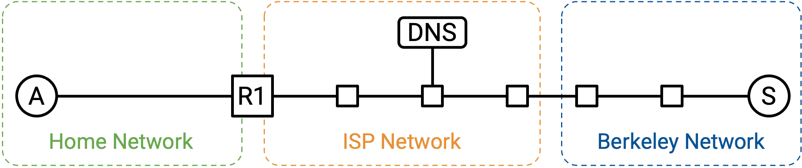
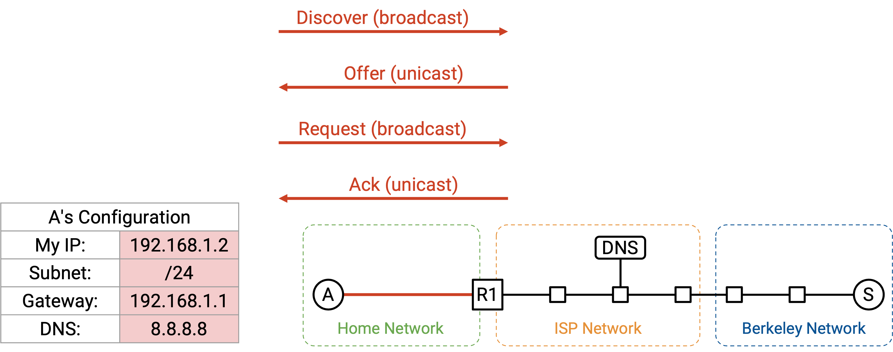
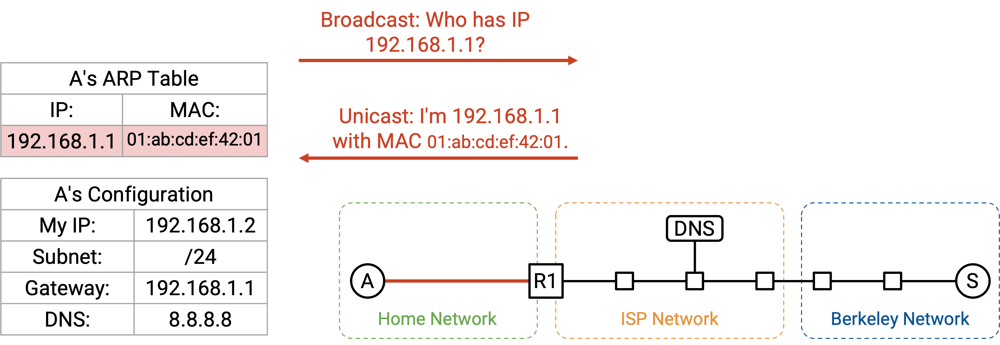
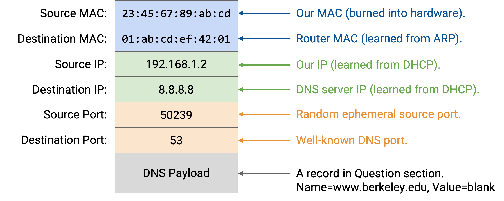
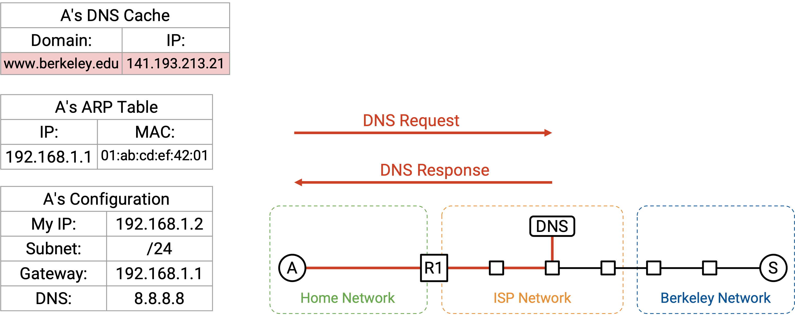
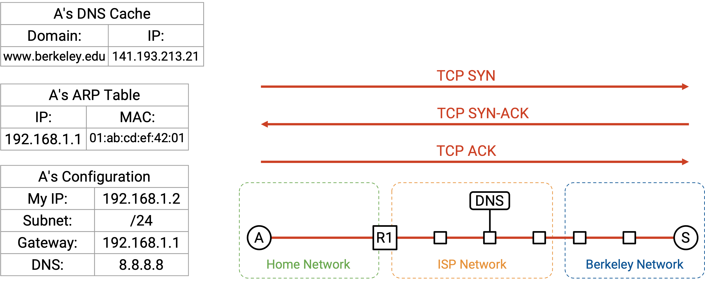
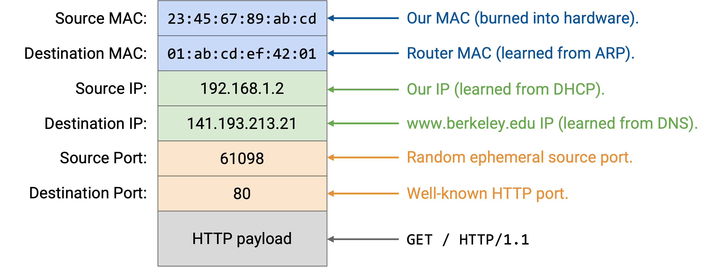
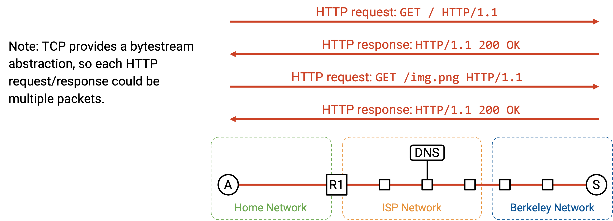
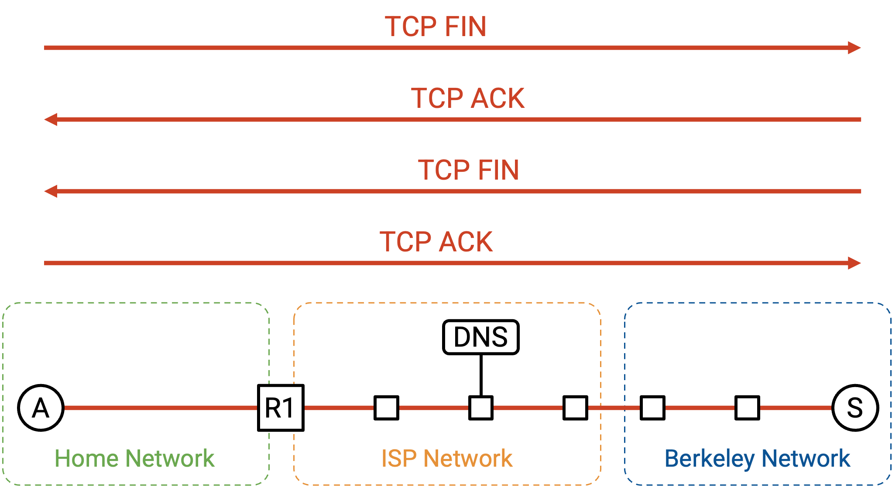
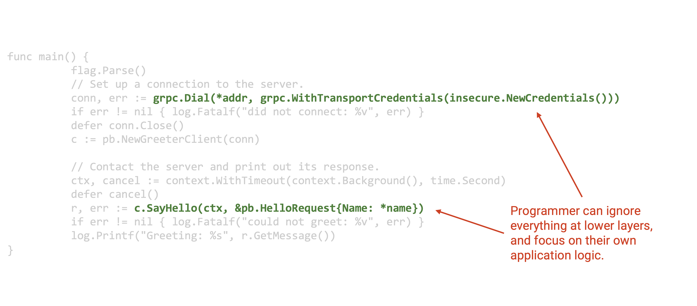

End-to-End Connectivity
Motivation
In this section, we’ll do a step-by-step walkthrough of what happens when we turn on our computer, plug it into an Ethernet network, and type www.berkeley.edu in our web browser. In the process of doing so, we’ll see how all the different pieces of the network work together to process the user’s request.
We’ll assume that we don’t need to turn on the Internet from scratch. For example, routers are already actively running routing protocols and have populated their forwarding tables accordingly.

Step 1: DHCP
We turn on our computer and plug it into an Ethernet network. We don’t have any information about the network yet, so we broadcast a DHCP request.
We’ll assume the home router is the DHCP server, which is common in home networks. The router/server unicasts an offer back to us. The offer contains information about the network: the subnet mask, the IP address of the default gateway, and the IP address of the DNS server. The offer also gives us an IP address we can use.
To complete the DHCP protocol, we send the request message confirming we’d like to use the offered configuration, and the router/server responds with an acknowledgement.

Step 2: Find Router at Layer 2
From DHCP, we learned about the IP address of the router, and our forwarding table now says that all non-local packets should be forwarded to this router. We’re about to send some packets to the DNS server (to look up the IP address of www.berkeley.edu), and to the Berkeley server itself, both of which may be non-local.
Before we can forward IP packets to the router, though, we need to figure out the router’s Layer 2 MAC address, so that we can send the packet to the router inside the local network.
First, we can verify that the router’s IP address, 192.168.1.1, belongs to the local subnet, 192.168.1.2/24. This tells us that the router is in the local network, and by sending an Ethernet packet to the router’s MAC address, we’ll reach the router.
To find the router’s MAC address, we broadcast an ARP request, asking for the MAC address of 192.168.1.1 (router’s IP address). The router hears this request and replies, saying, “I’m 192.168.1.1, and my MAC address is 01:ab:cd:ef:42:01.”
We can now cache this IP-to-MAC mapping, and we now know the router’s MAC address. As long as this entry stays in the cache, we won’t have to make the same ARP request again. All future requests to the outside Internet can be forwarded to the router’s MAC address.

Step 3: DNS Lookup
Next, we need to look up IP address of www.berkeley.edu. This is all done in the operating system, after the browser code calls something like getaddrinfo to trigger the DNS lookup.
From DHCP, we learned the IP address of the DNS server, 8.8.8.8. We also learned that we’re in the subnet 192.168.1.2/24. The DNS server isn’t in our local network, so we need to forward the DNS packet to the router.
We can now build up our DNS request packet, from the top down.
Layer 7: In the Question section, we add a DNS record requesting the A record with www.berkeley.edu’s IP address. We add the DNS header with the ID, number of records, and so on.
Layer 4: DNS runs on top of UDP. We pick any random source port, since we’re the client. We pick Port 53 for the destination port, since this is where resolvers and name servers listen for DNS queries.
Layer 3: The source IP is our own IP, as assigned by DHCP. The destination IP is 8.8.8.8, the IP address of the DNS server, which we learned from DHCP.
Layer 2: The source MAC is our own MAC address, which is burned into our hardware. The destination MAC is the MAC address of the router (the next hop), which we learned from ARP.
With the packet fully built, we can send the bits along the wire (Layer 1).

When the packet reaches the router, if the network is using NAT, the router might rewrite the UDP/IP headers to translate our private IP address into a public IP address. However, as the end host, we don’t have to worry about NAT. The router should be doing all the translation for us, giving us the illusion that we can use our own IP address (from DHCP).
When our packet reaches the recursive resolver at 8.8.8.8, if the resolver doesn’t have our answer cached already, it might need to perform some additional lookups and ask the authoritative name servers for the records. Eventually, the recursive resolver finds the answer, and sends the A record back to us. We now have www.berkeley.edu’s IP address.

Step 4: Connect to Website
Now that we have www.berkeley.edu’s IP address, we can send packets to Berkeley. We’re using a web browser, so our goal is to make an HTTP request to this server.
HTTP runs on top of TCP, so we first have to make a TCP handshake to open a connection with the Berkeley server. The browser will call something like connect on a particular socket to open this connection, and the operating system (where TCP is running) will perform the handshake and pass packets to and from the browser.
The TCP handshake is performed: We send a SYN, Berkeley sends a SYN-ACK, and we send an ACK. We now have a bytestream between our computer and the Berkeley server.

Now, we can build up or HTTP packet, from the top down.
Layer 7: The HTTP method is GET. The resource we want is / (the homepage). The version is HTTP/1.1.
Layer 4: HTTP runs on top of TCP. The browser can pick any source port, since it’s the client. In general, this port could be manually specified by the application, or the application could specify “Port 0,” which is shorthand for asking the operating system to pick a random ephemeral port that’s currently unused. (As an aside, thinking back to NAT, allowing applications to manually specify ports is why two users might choose the same source port.) The destination port is 80, the fixed port number for HTTP.
Layer 3: The source IP is our own IP, as assigned by DHCP. The destination IP is 141.193.213.21, the IP address of www.berkeley.edu that was returned from our DNS query earlier.
Layer 2: This is the same as our DNS packet earlier. The source MAC is our own (burned into hardware), and the destination MAC is the router’s (discovered and cached from ARP).

The HTTP response comes back with status code 200 OK, and the content of the response has the HTML code of the website. The browser calls read on the socket to fetch the bytes of the HTTP payload, with the status code and the response, and processes them accordingly.
Within the bytestream, HTTP can add some delimiter like a newline character to denote the end of a request or response. Also, HTTP headers like Content-Length can specify the length of the payload. This also allows the browser to allocate enough memory to receive the response.
The HTTP response that comes back might trigger further requests. If the HTML in the response has some syntax like <img src="../logo.png">, this tells the browser to make another HTTP request to fetch the /logo.png resource. Or, the user might click a link on the website like www.berkeley.edu/about.html, which would also trigger another HTTP request to the same server.

Recall that multiple HTTP requests to the same server can be pipelined across the same TCP connection for efficiency, so we can keep the TCP connection open and keep using it for subsequent HTTP requests and responses.
Eventually, after some pipelining, the client or server chooses to close the connection. The normal teardown handshake occurs, where each side sends a FIN, and both FIN packets are acked. We’re all done!

Note that the HTTP requests/responses are not necessarily contained in a single packet. HTTP is built on top of the TCP bytestream, so a single HTTP request or response could get split up across multiple TCP/IP packets, where each packet has the same headers at Layers 1-3, and the Layer 4 headers differ in sequence number. There’s only a single header for the entire HTTP request/response, even if the request/response is split across packets. With HTTP, there’s no longer a one-to-one correlation from one request/response to one packet.
Sockets
If you’re a user visiting a website in your browser, you don’t need to write any code to run the application (HTTP) over the Internet. However, if you were a programmer writing your own application, you probably need to write some code to interact with the network.
The socket abstraction gives programmers a convenient way to interact with the network. The socket abstraction exists entirely in software, and there are five basic operations that programmers can run:
We can create a new socket, corresponding to a new connection. In an object-oriented language like Java, this could be a constructor call.
We can call connect, which initiates a TCP connection to some remote machine. This is useful if we’re the client in a client-server connection.
We can call listen on a specific port. This does not start a connection, but allows others to initiate a connection with us on the specified port.
Once the connection is open, we can call write to send some bytes on the connection. We can also call read, which takes one argument N, to read N bytes from the connection.
This socket abstraction gives programmers a way to write applications without thinking about lower-level abstractions like TCP, IP, or Ethernet.
From the operating system perspective, each socket is associated with a Layer 4 port number. All packets to and from a single socket have the same port number, and the operating system can use the port number to de-multiplex and send packets to the correct socket.
Layers in the OS
In hardware, Layers 1 and 2 are implemented on your computer’s hardware Network Interface Card (NIC). Layers 3 and 4 are implemented in the networking stack in the operating system. The Layer 7 applications are implemented in software. The benefit of putting Layers 3 and 4 in the OS is, the applications don’t have to worry about re-implementing them every time.
With this division of labor, the application just needs to think about data. The NIC just needs to think about packets. The network stack in the OS translates between connections and packets.
Viewing Packets
Tools like tshark and wireshark exist if you want to look at packets being sent across the network. These tools are useful when debugging the networking part of your code.
In your browser, you can also use the Network tab of the inspect element console to view data being sent and received.
If you actually looked the raw packets being sent across the network, you’ll see some real-world complexities that we didn’t cover in our end-to-end walkthrough. For example, packets might be encrypted and sent over TLS. Also, if we’re using HTTP/3.0, packets might be sent over QUIC (the UDP variant optimized for HTTP) instead of TCP.
Revisiting Layering
The full end-to-end picture lets us see why layering is a useful principle for building the network. We were able to solve specific problems at a single layer, without thinking about all the layers at the same time.
In fact, we haven’t discussed Layer 1 at all in this class. We didn’t talk about the electrical engineering or physics required to send signals across a wire. However, we were still able to build the other layers on top of Layer 1, without knowing exactly how Layer 1 works.
In this class, we’ve discussed HTTP as the predominant Layer 7 protocol, but HTTP is a relatively simple protocol. It’s possible that multiple applications want to build the same complicated functionality on top of HTTP, but they don’t want to each write the code for that functionality independently. To support this, we can actually build further protocols on top of HTTP, so that programmers don’t always have to start from scratch with HTTP.
One example of a protocol above Layer 7 is a remote procedure call (RPC) library. This allows a programmer to write some code, where some of the functions actually execute on a different computer elsewhere in the network. It would be annoying if everyone had to write RPC on top of HTTP from scratch, so instead, libraries like Apache Thrift and gRPC exist to abstract even more details away from the programmer.

Here’s an example of some network code that a programmer might write. It programs a client to say hello to some remote server.
Notice that all of the network protocols we discussed are completely hidden behind the two lines of calls to networking libraries. The programmer didn’t have to think about HTTP, TCP, IP, Ethernet, ARP, DHCP, or any other lower-level protocol. It’s still useful to know about these protocols if they go wrong, and understanding the protocols can help you optimize your code for specific protocols, but ultimately, layering is a very powerful tool for abstraction.